时间推理题需要孩子仔细观察3～6幅图，从图中找到判定图先后顺序的特征，也就是说如果图按照孩子找到的某一个顺序排列，孩子需要有一个足够充分的理由。这样的题目，需要用到孩子多方面的知识和能力，如生活常识的积累、认真的观察、丰富的想象力、严密的逻辑推理等。
解决这类问题，能够培养孩子敏锐的观察能力、快速从多幅图中找到不同点和共同点的能力，能够最大限度地发挥孩子的想象力，同时也有助于提高孩子的表达能力。
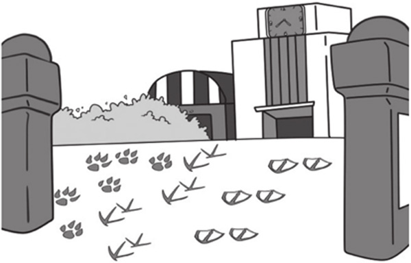
典型例题 1 认真观察下面的4幅图，按照合理的顺序把4幅图重新排序吧。
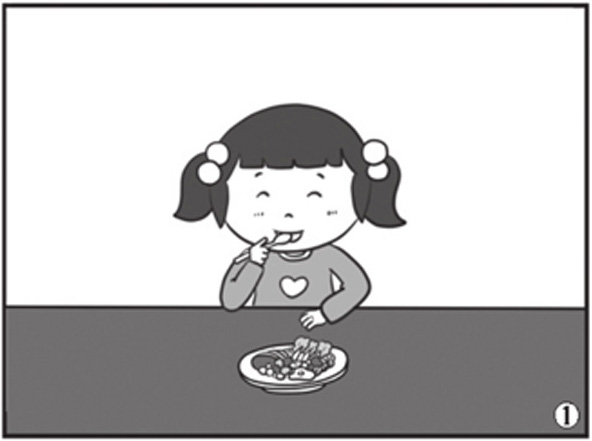
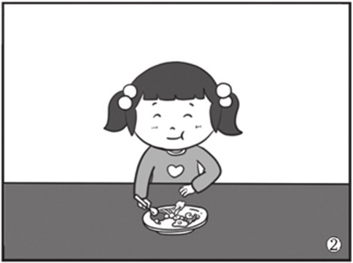
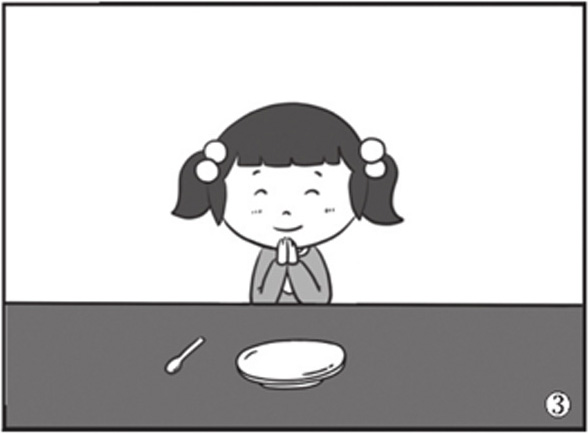
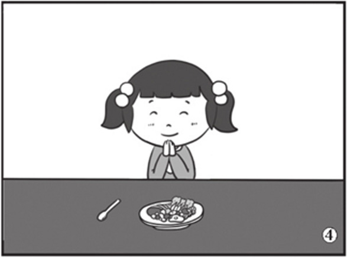
基于对生活常识的认知，饭是越吃越少的，所以盘子中食物的多少是解答这道题的关键。图③的盘子里没有食物了，图②盘子里的食物比图①和④盘子里的食物都要少，所以图③排在图②的后面，图②排在图①、图④的后面。再看图①和图④，图①是已经开始吃了，图④是刚坐下准备吃，所以图④在图①的前面。因此正确的顺序应该如下。
图④：小女孩儿看到了好吃的，坐下来准备吃。
图①：小女孩儿用勺子开始吃食物了。
图②：小女孩儿已经吃了一部分食物了。
图③：小女孩儿把所有的食物都吃光了。
典型例题 2 请认真观察下面4幅图，发挥你的想象力，给它们排序，并看图编个故事吧。
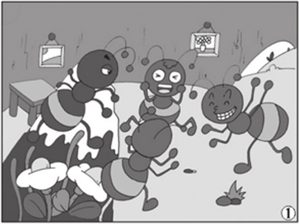
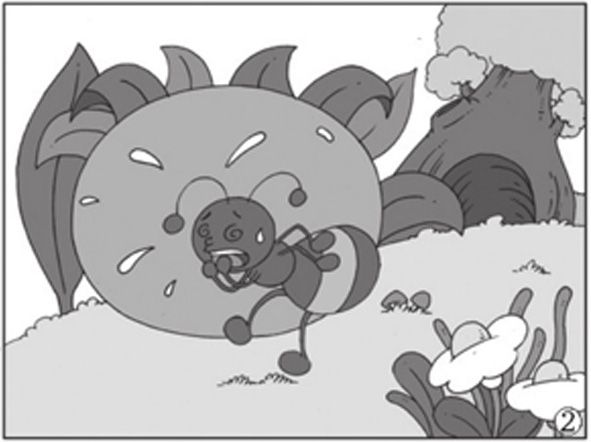
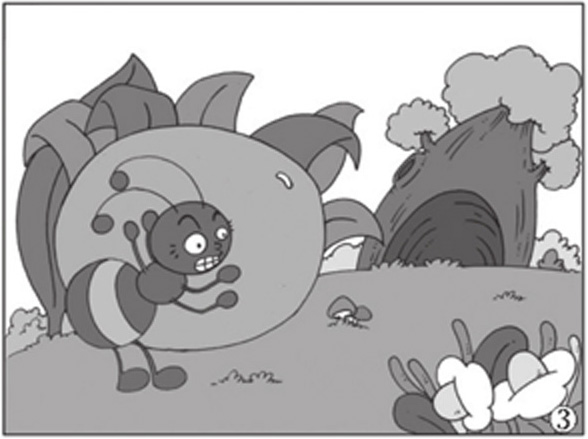
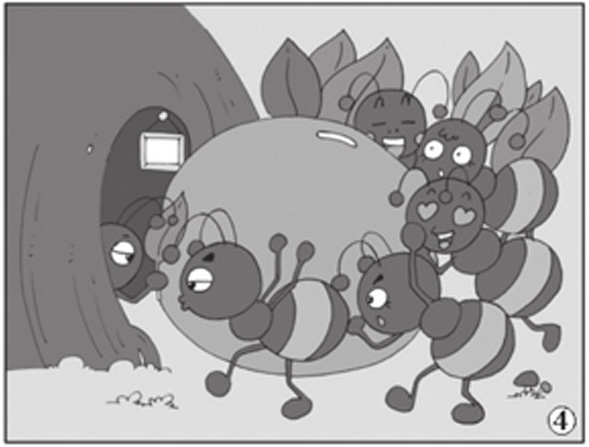
这4幅图实际上是一个事件的发展过程，事件发展的过程合理，符合逻辑就可以。上面的4幅图实际上取材于《蚂蚁搬豆》（一首儿歌）：一只蚂蚁在洞口发现了一粒豆，想把它搬到洞里去，使劲推，推得满头大汗，气喘吁吁也推不动，于是到洞里叫来了很多蚂蚁，它们一起把豆推到洞里去了。
根据这样的一个故事梗概，我们就可以很容易地给图片排序了，正确的图片顺序是③、②、①、④。
典型例题 3 一艘货轮需要先去大连港装货物，再去青岛港装货物，最后去烟台港装货物，装完货物后，要把所有的货物运到上海港。请认真观察下面的4幅图，你觉得下面4幅图的先后顺序是怎样的？
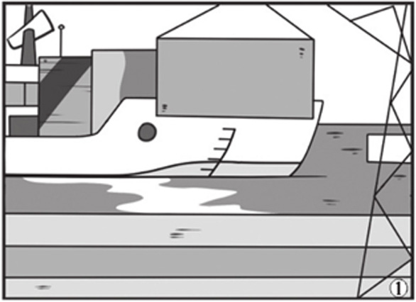
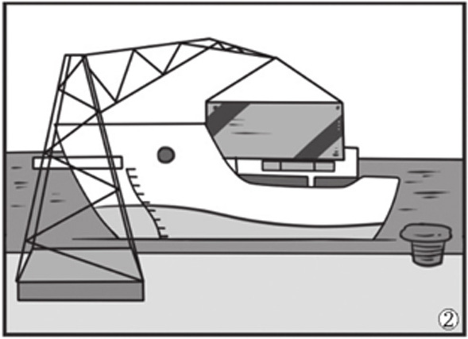
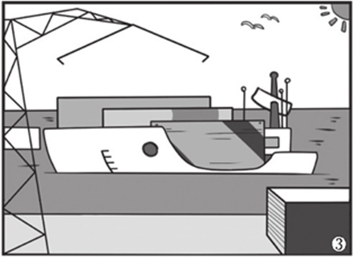
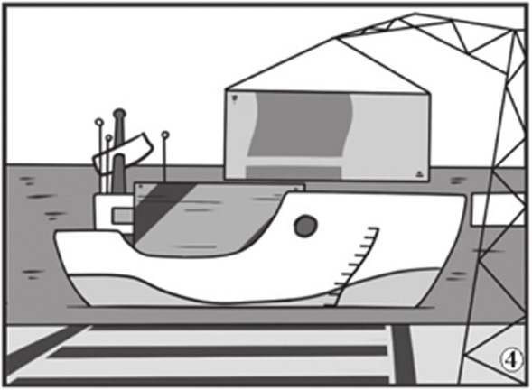
这4幅图的关键在于货轮的吃水深度，这也源于一个常识，就是船上的货物越重，船的吃水越深。听过《曹冲称象》故事的孩子应该知道这个常识。由于货轮要在3个码头装货物，所以吃水是越来越深的，按照这个规律，就可以对4幅图排序了。吃水深度由深到浅依次是③、①、④、②，所以先后顺序应该是②、④、①、③。
1.爸爸在公园里给嘟嘟拍了3张照片，你能知道这3张照片哪张是最先拍的，哪张是最后拍的吗？
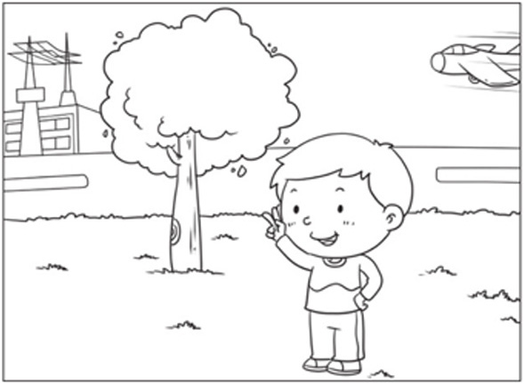
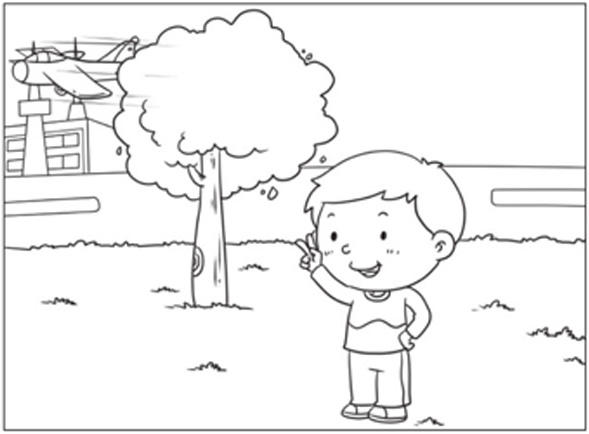
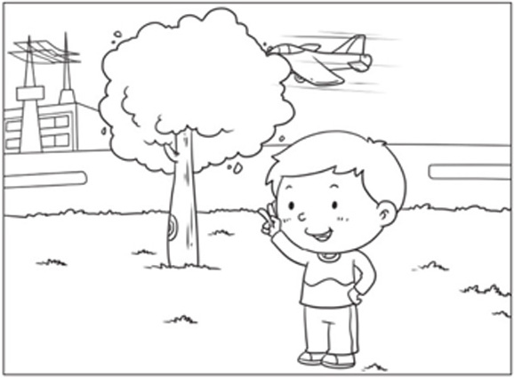
2.爸爸在海边拍大海的同一个场景，共拍了3张照片，你知道哪张是最先拍的，哪张是最后拍的吗？
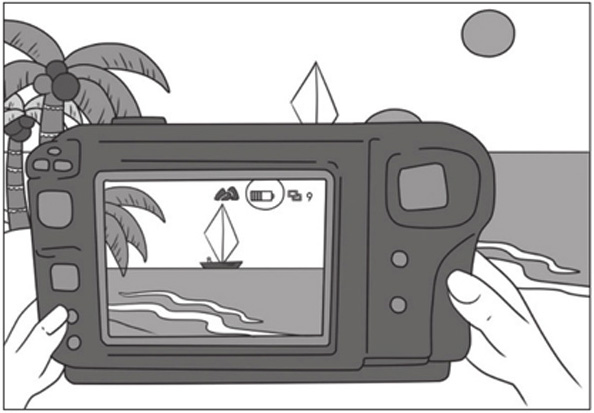
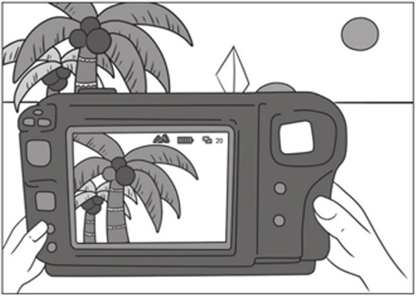
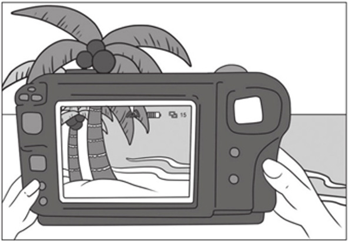
3.认真观察下面的4幅图，按照合理的顺序把4幅图重新排序吧。
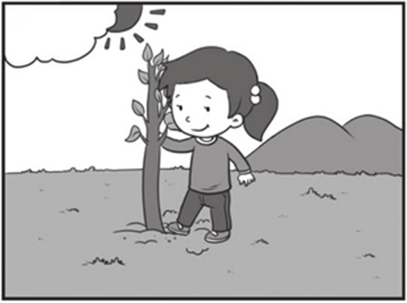
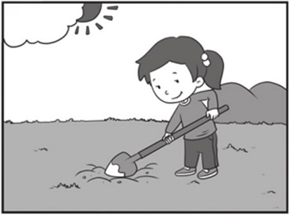
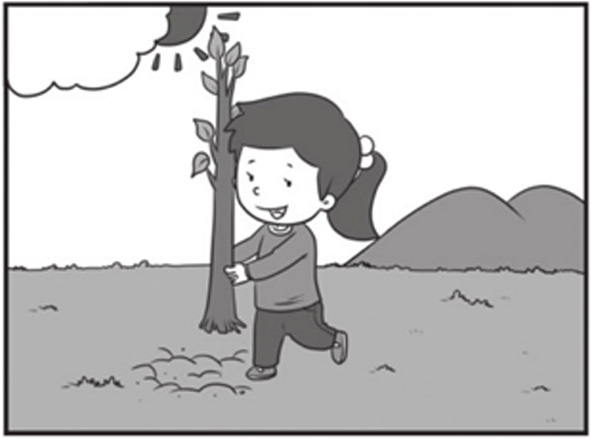
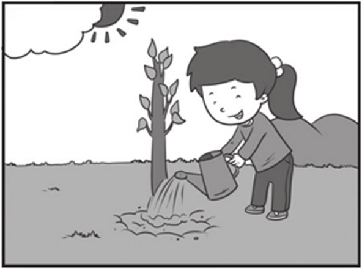
4.昨天晚上刚下了一场雪，一大早小鸡、小鸭和小狗就来上学了，通过下面的3幅图，你知道谁最先来到学校，谁最后来到学校吗？
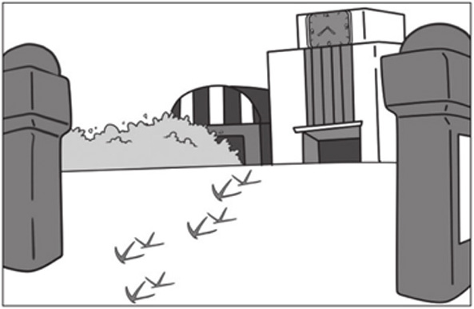
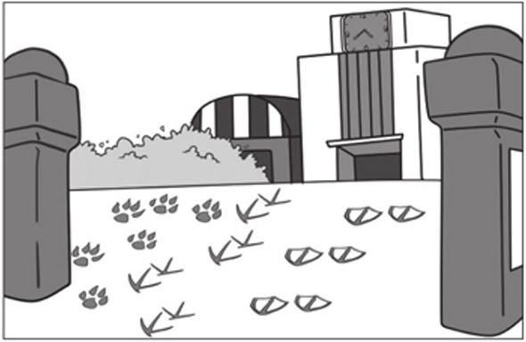
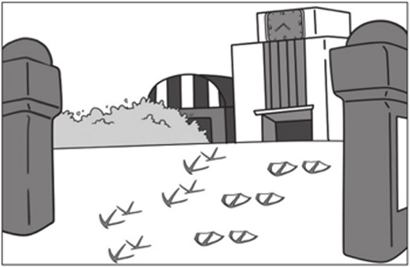
5.认真观察下面的4幅图，按照合理的顺序把4幅图重新排序吧。
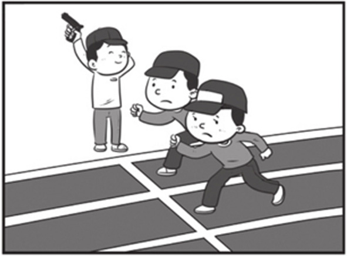
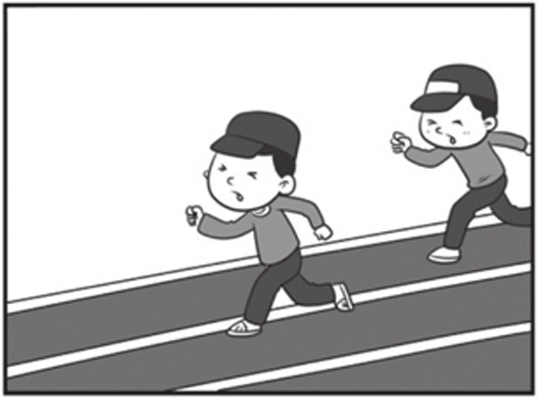
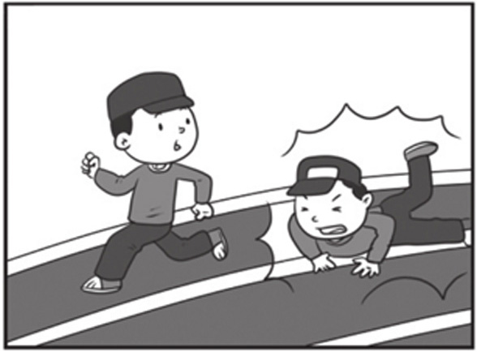
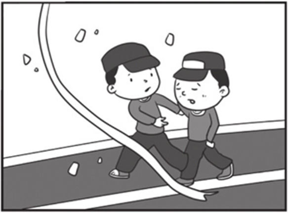
6.早晨，叔叔开着货车给不同的超市送货，你能按照合理的顺序给下面的4幅图排序吗？
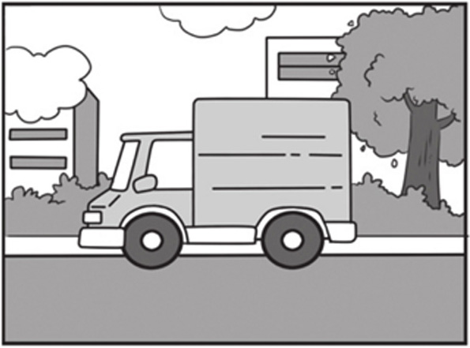
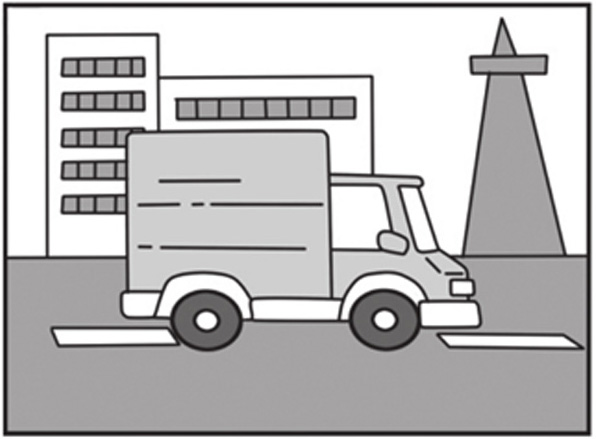
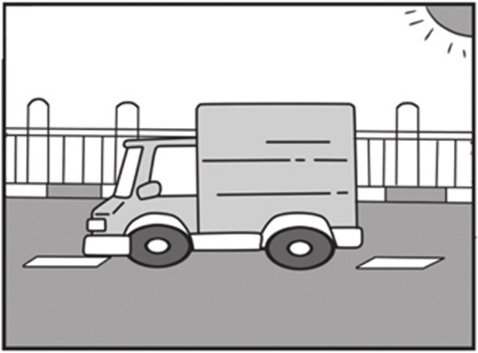
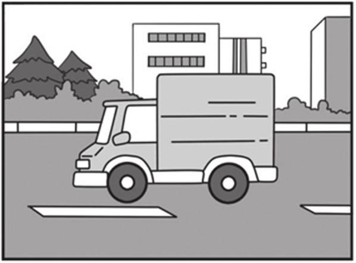